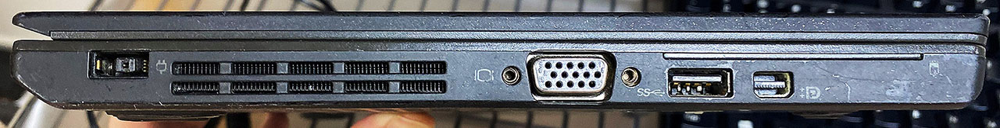
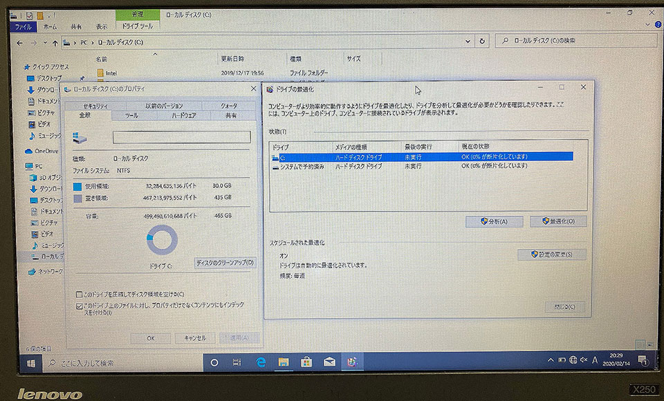

ThinkPad X250 を買った
↑コレを買った。
目次
Linux 専用マシンが欲しい！
WSL (Windows Subsystem for Linux) による Ubuntu GUI を試したのだが、VcXsrv での接続が微妙だったり、なんかキレイに上手くいかなかったりしてイライラしたので、Linux 専用機を作ろうと思い立った。コレはお遊び用で、普段持ち歩かないつもりだったので、安い中古のノート PC を買うことにした。
どこのメーカにするか迷ったが、前々から若干気になっていた ThinkPad シリーズに手を出してみることにした。ThinkPad は企業での利用も多く、リース品が安く中古で出回っていることが多いのだ。
求めるスペック
X シリーズ、E シリーズ、T シリーズなど、様々なラインナップがあるが、自分は以下あたりの製品に絞ることにした。
- ThinkPad X2xx シリーズ : 百の位の
2は「12.5インチモニタ」の2。十の位の数字は世代を表す- ThinkPad X250 : 2015年発売・第5世代 CPU
- ThinkPad X260 : 2016年発売・第6世代 CPU・メモリ 16GB モデル登場
- ThinkPad X270 : 2017年発売・第7世代 CPU・USB-C ポート対応
- ThinkPad X280 : 2018年発売・第8世代 CPU
- ThinkPad X1 Carbon シリーズ : モニタは14インチ。2012年の初代から SSD 搭載モデルしか存在しない
やはり軽量・小型な部類であることを望んで、軽量な X シリーズを中心に探した。それ以外のモデルも見ていたが、以下の条件に当てはまるモノは除外することにした。
- ThinkPad X240 : コレだけトラックパッドの仕様が異なり、全体がベコベコと凹む超使いづらいモノらしい。一応 X250 のトラックパッドに換装可能だが、2014年発売モデルとなると中古ではだいぶヘタリがあると思い除外
- 古すぎるモデル : 2013年以前くらいのモデルはさすがに古過ぎるかと。スペック的にもそうだし、バッテリーがヘタっていたり、内蔵 GPU や液晶の解像度がショボすぎてつらいかなと
- テンキーが付いているモデル : 後述のとおり、キーボードにはこだわりたく…
それ以外に気にしたのは以下のとおり。
- CPU：Core i5 以上
- 今まで Core i7 ばかりで i5 は使ったことがなかったが、お遊び用なので拘らない
- ただし i3 は非力と判断し除外
- RAM：8GB 以上
- Windows OS ではなく Linux OS なので、8GB もあれば十分かと判断
- ただしそれ以下はお遊びにしても非力と判断し除外
- キーボード : US 配列
- ThinkPad はキーボードレイアウトが以外とコロコロ変わっている。7列タイプとかが往年のファンには人気らしいが、なるべく標準的な配列に近いモノを選びたかった
- 当初、日本語配列モデルを安く購入し、あとで US キーボードだけ別に購入して自分で換装しようかとも思ったが、総額があまり安くならないのと、X シリーズのキーボード換装はつらいらしいので止めた (ネット上に文献がないワケではないので興味がある人はやってみても良いかも)
SSD は載っていればラッキーくらい。どうせプリインストールされている Windows は使わずにフォーマットしてしまうつもりだったので、HDD モデルでも自分で SSD に換装すれば良いかなと思っていた。
ネットで探す
ヤフオク、楽天、eBay (セカイモン) を中心に1週間ほどウォッチしていた。予算上限は2万5,000円で検索条件を保存していたが、ちょくちょく良い感じの商品が出てくるので、やはり ThinkPad は買いやすい。自分みたいに英語配列にこだわりがなければ、日本語配列モデルは本当にたくさん出ていた。
eBay も見ていたが、US 配列がデフォで探しやすい代わりに、安いモノは物凄く汚くて買いたくならないモノが多かった。セカイモンで安全に輸入しようと思うと手数料が高くなるので、ヤフオクで粘るのが良さそう。
結局 ThinkPad X250 を買った
結局自分はヤフオクで ThinkPad X250 を買った。2020-02-14 入手。購入時のスペックは以下のとおり。
- CPU : Core i5-5300U (2.30GHz)
- 内蔵 GPU : Intel HD Graphics 5500 (Broadwell GT2)
- RAM : 8GB (DDR3 1600MHz らしい)
- US キーボード
- 液晶解像度 : 1366x768 (16:9)・タッチ液晶ではない
- HDD 500GB
- Windows10 Pro 64bit インストール済
- 完動品・AC 電源のみ付属
- 参考
X250 は2015年発売のモデルだが、割と美品っぽくてよかった。液晶の解像度が HD より少し大きい程度だが、まぁよしとする。HDD は SSD に換装するので気にしない。
購入時の状態をチェック
中古品なので、とりあえず動作チェック。電源を入れると懐かしいハードディスクの動作音が聞こえてくる。起動は1分半くらいで、HDD にしては早い方か。
初期インストール直後の Windows 環境ということもあるだろうが、HDD にしてはそれなりに動作はサクサクしている。

キーボードやトラックポイント、トラックパッドの動作不良はナシ。ThinkPad はキーボードが有名だが、確かに打ちやすい。独特の感触と押し心地で、打っていてストレスがない。矢印キーと Page Up・Page Down キーが隣接しているのは誤操作が増えるのであまり好きではないが、今のところそこまで打ち間違いもないかな。ひどいようなら無効化する。ｗ
左右に1つずつある USB-A ポートも、若干緩い気はするが正常に認識している。AC 電源も正常に動作するし、内蔵バッテリーも数時間は持ちそうな感じ。
液晶の小ささはギリギリかな。文字が見づらいようなことはないが、作業領域が若干小さい感じ。Full HD サイズの動画は等倍表示できないので、YouTube は 720p でダラ見するレベルか。あまりギラギラとした光沢感のない液晶で、反射が少なく見やすい。

HDD の動作音は静かな方かしら。ファンもうるさくないし、かなり良品では。
重量は 1.45kg で、持ち運びも大丈夫なレベル。自分は 910g の ZenBook3 と 920g の MacBook を使ってきたが、職場では 2kg に達する15インチ MacBookPro も使っていたりするので、1.45kg ならまだ軽い方に感じる。
コイツを改造してやるぜ〜！
というワケで、格安でかなりの良品を手に入れられた。あまりお金をかけずに、Ubuntu 専用マシンに仕立て上げてやろうと思う。